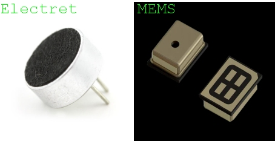
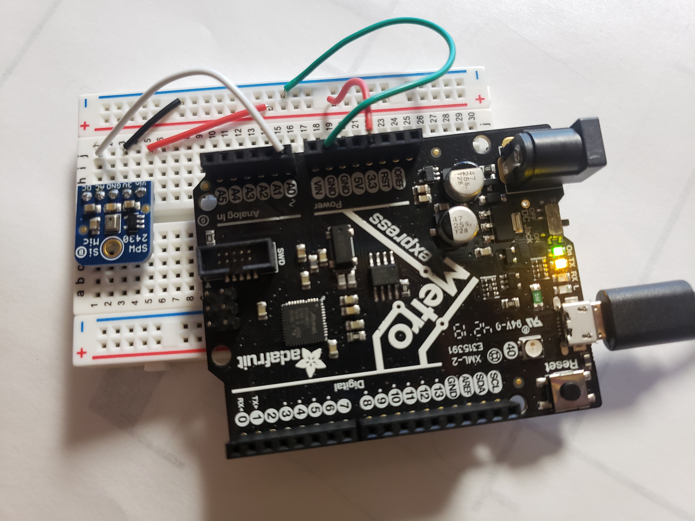
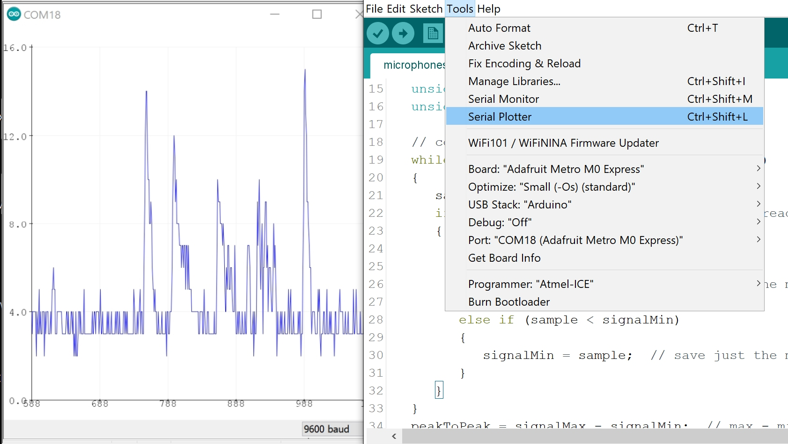
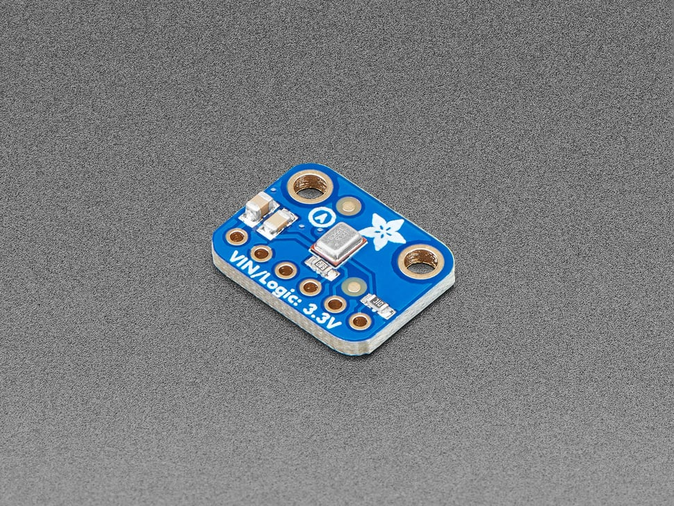
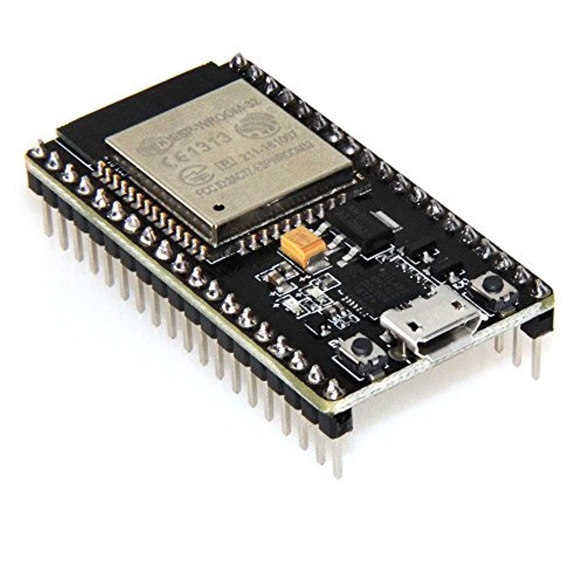

<h3> MEMS Microphone Module </h3>
<h4> Adafruit MEMS Microphone Breakout SPW2430 </h4>
<p>The most common microphones used with microcontrollers are the MEMS and electret microphones. MEMS microphones are considered an upgrade to their electret predecessor because besides having a much smaller footprint, they also contain internal semiconductors that act as an audio preamplifier. Audio preamplifiers condition small microphone level signals (on the order of one thousandth of a volt to one tenth of a volt, 0.001V – 0.1V) to line level (up to 2 volts peak to peak). Electret microphones need an external preamplifier circuit to boost its output signal. MEMS microphones can be analog or digital, the output of digital MEMS use either <a href='https://en.wikipedia.org/wiki/Pulse-density_modulation'>pulse density modulation (PDM)</a>, or <a href='https://en.wikipedia.org/wiki/I%C2%B2S'>I2S</a> protocols and can connect directly to a microcontroller, eliminating the need for an ADC.</p>
<p></p>
<p>The SPW2430 board uses an analog MEMS microphone and is fairly simple to hook up. You only need to <u>connect GND to GND, Vin to 3.3-5VDC,</u> and the analog audio waveform will come out of the <u>DC pin.</u> In this case, I have the DC pin connected pin A0 on the Metro M0 Express board. The AC pin can be used for applications where AC-coupled audio is required.</p>
<p></p>
<p>If you upload the following code to your board, you can measure the amplitude or “loudness” of the audio signal generated by the SPW2430. Audio signals are oscillating voltage signals, think of sound <i>waves</i>, so the higher the amplitude, the greater the distance between the center voltage and the high and low peaks of the audio signal. This sketch samples the microphone audio in 50 millisecond intervals, measures the highest and lowest peaks within that sample, and then prints the difference between the peaks to Serial. In this case, it might be easier to see what’s going on by using the Serial Plotter (Tools > Serial Plotter or Ctrl+Shift+L) instead of the Serial Monitor. <br><br> </p>
<pre><code class="language-arduino">
const int sampleWindow = 50; // Sample window width in mS (50 mS = 20Hz)
unsigned int sample;
void setup()
{
Serial.begin(9600);
}
void loop()
{
unsigned long startMillis= millis(); // Start of sample window
unsigned int peakToPeak = 0; // peak-to-peak level
unsigned int signalMax = 0;
unsigned int signalMin = 1024;
// collect data for 50 mS
while (millis() - startMillis < sampleWindow)
{
sample = analogRead(0); //reading DC pin from pin A0
if (sample < 1024) // toss out spurious readings
{
if (sample > signalMax)
{
signalMax = sample; // save just the max levels
}
else if (sample < signalMin)
{
signalMin = sample; // save just the min levels
}
}
}
peakToPeak = signalMax - signalMin; // max - min = peak-peak amplitude
Serial.println(peakToPeak);
}
</code></pre>
<h4> Serial Plotter </h4>
<p></p>
<p>Note, this is not measuring the frequency of the sounds being picked up by the microphone. Analyzing frequency is a much more subtle and complex process which can be achieved by using <a href='https://www.norwegiancreations.com/2017/08/what-is-fft-and-how-can-you-implement-it-on-an-arduino/'>Fast Fourier Transform (FFT) libraries.</a></p>
<h3>I2S Microphone</h3>
<p>
Another way to interface with audio data, is a method called i2s. Its just a standard of communication that samples analog signals to convert them into digital signals, and
this allows your microcontroller to interface with your microphone
</p>
<p> In this example we will be using the SPH0645 microphone and an esp32</p>
<div style = "display: flex; justify-content: center;">
<p></p>
<p></p>
</div>
<div style = 'justify-content: center;'>
<div style = "display: flex; justify-content: center;">
<div>
<h4 style = "padding-left: 20px;">SPH0645 pins:</h4>
<table>
<tr>
<th>SPH0645</th>
<th>ESP32</th>
</tr>
<tr>
<td>WS</td>
<td>GPIO 25</td>
</tr>
<tr>
<td>SCK</td>
<td>GPIO 5</td>
</tr>
<tr>
<td>SD</td>
<td>GPIO 35</td>
</tr>
<tr>
<td>VDD</td>
<td>3.3V</td>
</tr>
<tr>
<td>GND</td>
<td>GND</td>
</tr>
<tr>
<td>L/R</td>
<td>GPIO 25</td>
</tr>
</table>
</div>
</div>
</div>
<p>
After wiring up the mic and esp32 here is the code you need to get the reading
</p>
<pre> <code>
/*
This example reads audio data from an I2S microphone
breakout board, and prints out the samples to the Serial console. The
Serial Plotter built into the Arduino IDE can be used to plot the audio
data (Tools -> Serial Plotter)
Circuit:
* Arduino/Genuino Zero, MKRZero or MKR1000 board
* GND connected GND
* 3.3V connected 3.3V (Zero) or VCC (MKR1000, MKRZero)
* WS connected to pin 0 (Zero) or pin 3 (MKR1000, MKRZero)
* CLK connected to pin 1 (Zero) or pin 2 (MKR1000, MKRZero)
* SD connected to pin 9 (Zero) or pin A6 (MKR1000, MKRZero)
created 17 November 2016
by Sandeep Mistry
*/
#include <ESP_I2S.h>
I2SClass I2S;
void setup() {
// Open serial communications and wait for port to open:
// A baud rate of 115200 is used instead of 9600 for a faster data rate
// on non-native USB ports
Serial.begin(115200);
while (!Serial) {
; // wait for serial port to connect. Needed for native USB port only
}
I2S.setPins(5, 25, -1, 35, 0);
// start I2S at 16 kHz with 32-bits per sample
if (!I2S.begin(I2S_MODE_STD, 16000, I2S_DATA_BIT_WIDTH_32BIT, I2S_SLOT_MODE_MONO)) {
Serial.println("Failed to initialize I2S!");
while (1); // do nothing
}
}
void loop() {
while (I2S.available())
{
// read a sample
int sample = I2S.read();
if ((sample == 0) || (sample == -1) ) {
return;
}
// convert to 18 bit signed
sample >>= 14;
Serial.print(100000);
Serial.print(" ");
Serial.print(-100000);
Serial.print(" ");
// if it's non-zero print value to serial
Serial.println(sample);
}
}
</code></pre>
<p>
Now you can read the values on the mic on the serial plotter.
</p>